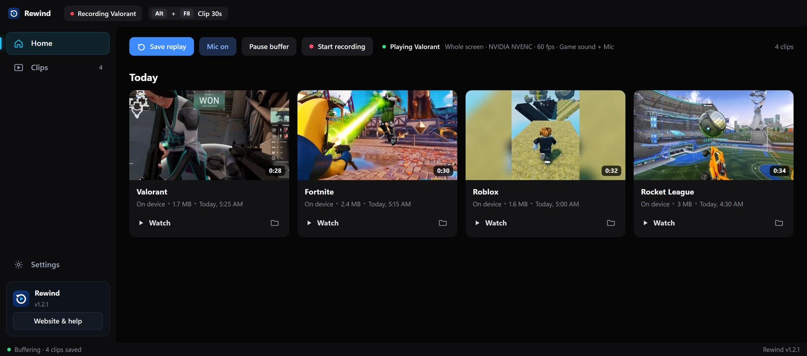
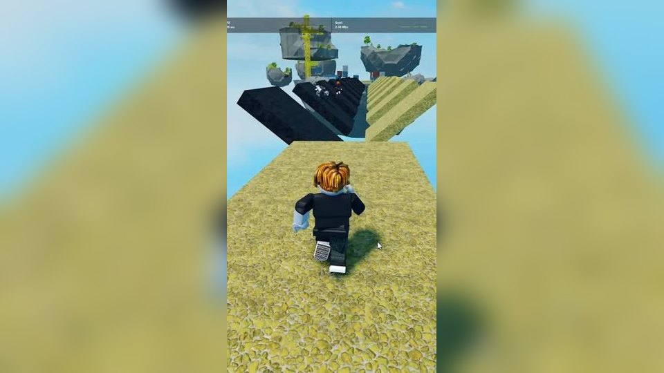
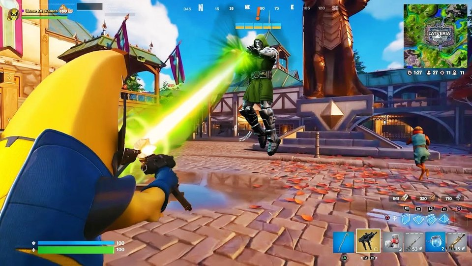
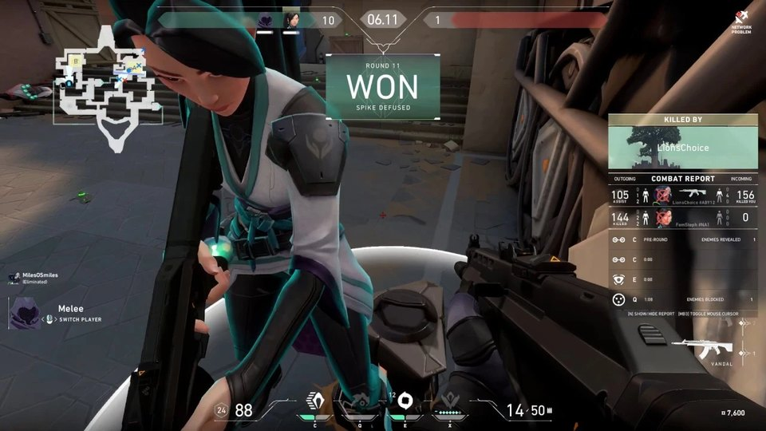
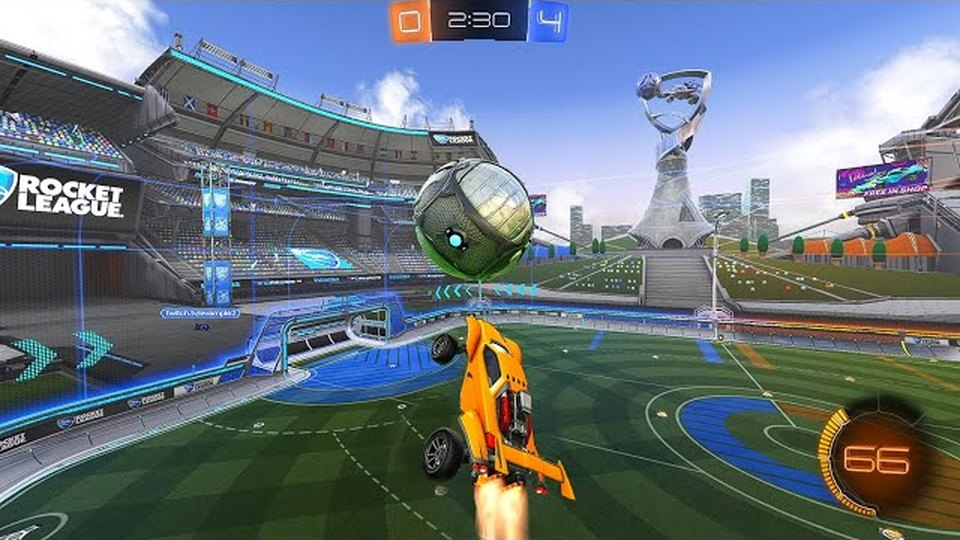
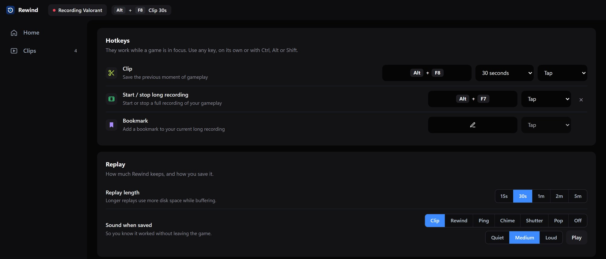
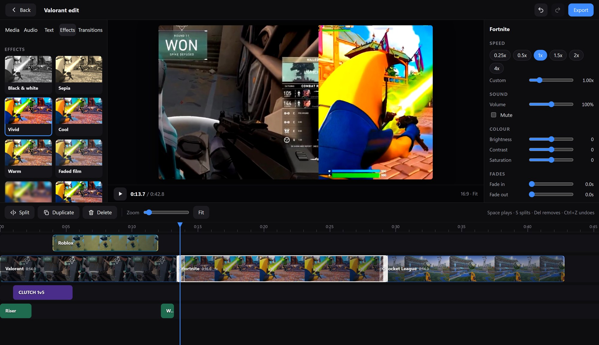
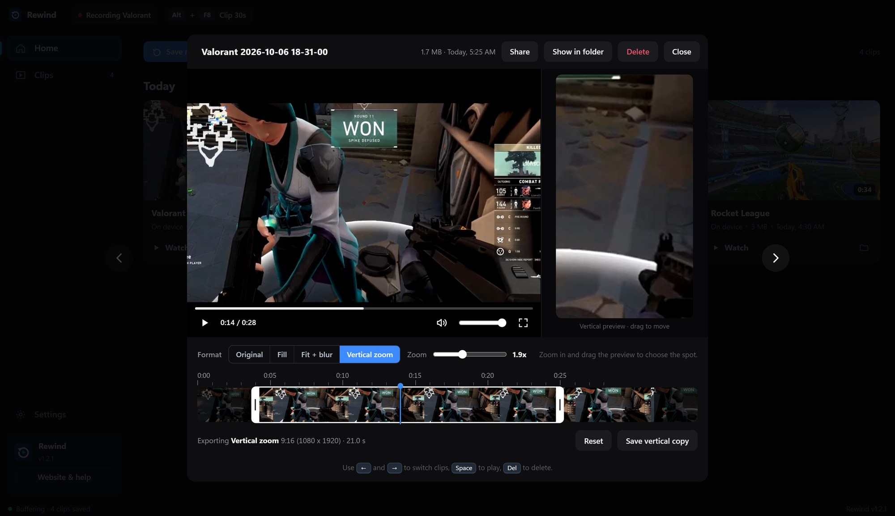

Never miss a clutch again.
Rewind quietly keeps the last 30 seconds of your game and sound. When something happens, press Alt + F8 and it's saved as a clip, named after the game you were playing.

Three steps, then forget about it.
Rewind sits in the tray and records over itself, so it never fills your drive. You only keep the moments you ask for.
Open Rewind
Run Rewind.exe. The first launch fetches its video tools by itself, then it starts buffering and tucks into the tray.
Play like normal
Your graphics card does the recording, on a part of the chip your game doesn't use.
Press Alt + F8
You hear a short chime and the clip is saved to Videos\Rewind, named after the game.




Game names and footage belong to their owners, and Rewind isn't affiliated with them. It works with almost any PC game.
Built for gaming PCs.
Everything stays on your computer. No account, nothing uploaded.
GPU encoding
Uses NVENC on NVIDIA, AMF on AMD, or Quick Sync on Intel, and falls back to the CPU if there's none.
Game and mic audio
Records what you hear, plus your voice if you want it, kept in sync even through silence.
15 seconds to 5 minutes
Pick how far back Rewind reaches. Saving takes about a second because nothing gets re-encoded.
Knows what you're playing
Spots the game in front and saves each replay in its own folder, like Rewind\Valorant. It can even start the buffer only when a game opens.
No black clips
If a game blocks screen capture, Rewind notices and records the game's window instead, without you doing anything.
Trim in the app
Open a clip, drag the handles, and save the cut as a copy or replace the original. No other editor needed.
Records your mic
Your voice is mixed into every clip. If Windows points at a silent virtual mic, Rewind picks a real one for you.
Vertical clips
Fill, Fit + blur or Vertical zoom, with a live 9:16 preview. Saves a 1080 x 1920 copy, ready for Shorts, Reels and TikTok.
Long recordings
Record a whole session with one hotkey and drop bookmarks on the moments you want to find again.
Share without the mp4
Shrink a clip to fit Discord's limit, copy the file, or get a temporary link instead.
Clip library
Clips are grouped by day with their length. Tick several and delete them in one go.
Updates itself
A banner offers each new version with Update now, Later or Skip. Rewind downloads it and restarts itself.

A real editor, built in and free.
Press Open in editor on any clip. Cut it up, stack clips and layers, add transitions, effects, text and sounds, and export a finished video without leaving Rewind.

Multiple tracks
Main video, picture-in-picture layers on top, text lanes and several sound tracks, each on its own row of the timeline. Drag, trim and stack them freely.
Free transitions
Twelve between-clip transitions: fade, dissolve, dip to black, wipes, slides, circle open and close, and zoom. Pick one and set how long it lasts.
Free effects
Black and white, sepia, vivid, cool, warm, faded film, blur, sharpen, negative, vignette, film grain, mirror and flip. Stack as many as you like.
Free sounds
Twelve built-in sound effects, plus a search of free music and sound effects online. They are public domain or CC0, so there's nothing to credit.
Speed, sound, colour
Slow motion to 0.25x or fast forward to 4x, volume and fades for every clip, brightness, contrast and saturation, and titles in seven fonts.
Any shape, one export
16:9, 9:16, 1:1 or 4:5 with Fit, Fill or Fit + blur. Export a finished mp4 in HD or Full HD with your graphics card.
Trim and go vertical, right where you watch it.
Open any clip and cut it down to the good part. Save the cut as a copy, replace the full clip, or switch to a vertical format (Fill, Fit + blur or Vertical zoom) with a live preview.

One file. That's it.
No installer and no zip. Download Rewind.exe, run it, and you're recording.
Rewind for Windows
Free · Windows 10 / 11 (64-bit)
Download for WindowsWindows may show a blue "protected your PC" screen the first time. Click More info, then Run anyway.
- Windows 10 or 11 (64-bit)
- Graphics card NVIDIA, AMD or Intel
- Extra downloads None. It fetches its own video tools
- Account needed No
- Cost Free
Help
The usual first-run questions.
Windows says "Windows protected your PC"
That's SmartScreen. It shows for any new app that isn't signed with a paid certificate. Click More info, then Run anyway. You only need to do it once.
My clips are black
Rewind fixes this by itself. It checks the picture every few seconds, and if a game comes out black, it switches to recording that game's own window and remembers the game for next time. You'll see a note on the Home screen when that happens.
To force it for every game, open Settings → Games and set How to record games to Game window.
If clips are still black, set the game to borderless or windowed fullscreen. On laptops with two graphics chips, set Rewind to the same GPU as the game in Windows Settings → Display → Graphics.
The shortcut doesn't do anything
Another app may own that key. Open Settings in Rewind and press Change to pick a different one. Rewind warns you if a key is taken.
Alt + F10 is NVIDIA's own instant replay key, which is why Rewind uses Alt + F8.
Rewind thinks something is a game when it isn't
Open Settings → Games and press × next to it under Games Rewind has seen. Rewind won't treat it as a game again.
There's no sound in my clips
Check that Game and desktop sound is on in Settings. If you switched headphones or speakers after opening Rewind, turn it off and on again so Rewind follows the new device.
Where are my clips and settings?
Clips go to Videos\Rewind, or the folder you chose in Settings. Settings and the log are in %APPDATA%\Rewind.
Does it slow down my game?
With a GPU encoder, barely. The encoder is a separate part of the graphics chip. On CPU encoding, heavy games can lose a few frames, and 30 fps in Settings helps.
What's new
Every release, newest first.
Rewind 1.4.2
- Fixes "Couldn't open audio: Invalid number of channels". Rewind tries the channel counts and sample rates a sound device will really accept, so game sound and the mic open on headsets, virtual mixers and spatial-audio setups. If audio still can't open, it records video only and says so.
- Recording that starts but never fills the buffer is spotted after 14 seconds and retried with the next capture method.
- Better AMD and Intel detection. More ways to start each graphics encoder, and Settings shows which graphics cards Windows found and why an encoder isn't available.
- Compatibility capture uses real screen pixels on scaled displays.
- New Copy report button in Settings for sharing what's going wrong.
Rewind 1.4.1
- Fixes "Capture stopped: Error opening input files: Invalid argument". If the fast screen capture can't start on a PC (some laptops, hybrid graphics, drivers that refuse it), Rewind now switches by itself to compatibility capture and remembers it. You can choose the method in Settings under Video.
- If a graphics encoder keeps failing, Rewind falls back to the processor after the capture method has been tried.
- Settings has a Show log file button to help work out problems.
Rewind 1.4.0
- Multiple tracks. Layer clips on top of the main video as picture-in-picture (move, resize, fade, opacity), stack text on its own lanes, and run several sound tracks at once.
- Transitions. Twelve free ones between clips: fade, dissolve, dip to black, wipes, slides, circle open and close, and zoom, with adjustable length.
- Effects. Thirteen free effects you can stack on any clip or layer, from black and white and film grain to blur, vignette and mirror.
- Free sounds. Twelve built-in sound effects, plus a search of free music and sound effects online (public domain and CC0, no credit needed).
- The editor has window buttons and can be dragged by its top bar.
Rewind 1.3.0
- Video editor. Open any clip and press Open in editor: a multi-clip timeline with split, trim, reorder, speed (0.25x to 4x), volume, fades, brightness, contrast and saturation, text with fonts, colours and outlines, music and sound tracks, 16:9, 9:16, 1:1 and 4:5 canvases, undo and redo, and an export to a normal mp4.
Rewind 1.2.1
- Links and Discord-sized copies are limited to clips of 10 minutes or less. Longer ones can be trimmed and saved as a copy first. Copying the file has no limit.
Rewind 1.2.0
- Every hotkey can be Tap or Long press (hold the key for 2 seconds), so a stray press won't clip or bookmark by accident.
- Forever links now work for any clip length: a clip over 200 MB is shrunk to fit just for the link, and your original stays untouched.
Rewind 1.1.1
- Share links can now last forever: pick Forever (up to 200 MB) in the Share menu, or keep the 1 hour to 3 day options.
Rewind 1.1.0
- Hotkeys: Clip (with its length beside it), Start / stop long recording, and Bookmark. Set any of them in Settings.
- Long recordings: record a whole session, drop bookmarks as you go, and see them as flags on the timeline when you watch it back.
- Share without the mp4: copy the file, shrink it to fit Discord (10, 50 or 500 MB), or get a temporary link.
Rewind 1.0.9
- Vertical clips: pick Fill, Fit + blur or Vertical zoom in the player, check the live 9:16 preview, drag it to choose the part of the picture, and save a 1080 x 1920 copy. It works together with trimming.
Rewind 1.0.8
- Saving a replay is much faster, even for 2 and 5 minute clips. The clip is written in one pass and the sound plays the moment you press the key.
- Four new save sounds: Clip, Rewind, Ping and Chime. Clip is the new default.
- Updates now work like AutoClip's: a banner offers Update now, Later or Skip, shows download progress, and restarts Rewind for you.
Rewind 1.0.6
- New clips show up in the library right away, without switching pages.
- Select several clips (tick the box, or Ctrl+click) and delete them all at once.
- No more "shortcut already in use" warning on Home. Rewind quietly retries at startup.
Rewind 1.0.5
- Fixed the player: the video no longer spills over the timeline.
- The save shortcut can be any single key, not just a combo.
- The left sidebar has labels again, with a teal active item and the app card at the bottom.
Rewind 1.0.4
- New clip player with a timeline, thumbnail strip, volume, full screen and ← → to move between clips.
- Trim clips: drag the handles, then Save as copy or Replace original.
- Only one Rewind can run at a time, so two copies can't garble each other's clips.
Rewind 1.0.3
- Redesigned the app as a flat, dark clip library: clips grouped by day with length, size and a Watch button.
Rewind 1.0.2
- Microphone on by default, with a Mic button on Home. If Windows' default mic is a silent virtual device, Rewind picks a real one.
Rewind 1.0.1
- Settings → Updates: check for updates, see the status, and choose whether updates download automatically.
- Refreshed Home screen.
Rewind 1.0.0
- Rolling replay buffer from 15 seconds to 5 minutes, saved with a global shortcut (Alt + F8).
- GPU encoding on NVIDIA, AMD and Intel, with a CPU fallback.
- Game and mic audio, mixed and kept in sync.
- Game detection with a folder per game, and automatic game-window capture so clips don't come out black.
- Single-file
Rewind.exethat fetches its own video tools and updates itself.
Something not working?
Open %APPDATA%\Rewind\rewind.log and look at the last few lines. They say what failed. Then tell us on GitHub.